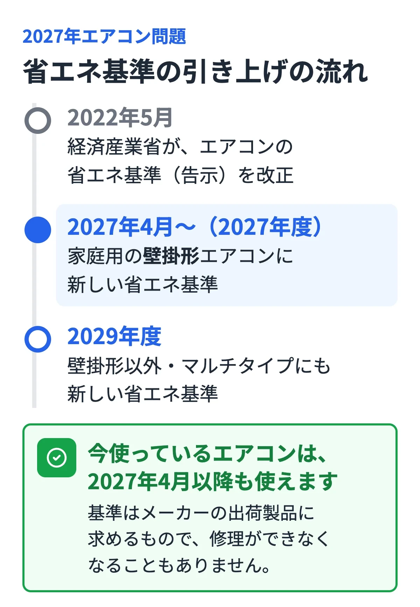
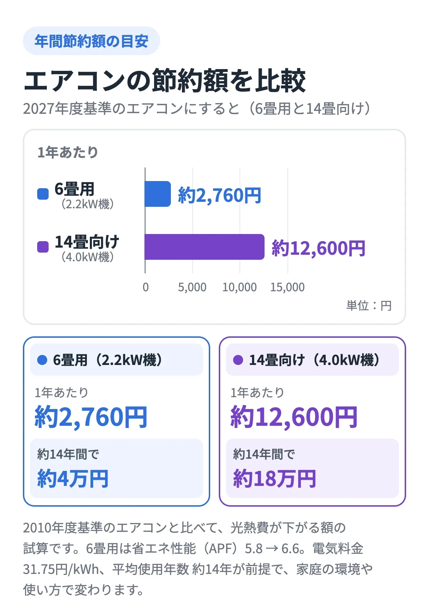
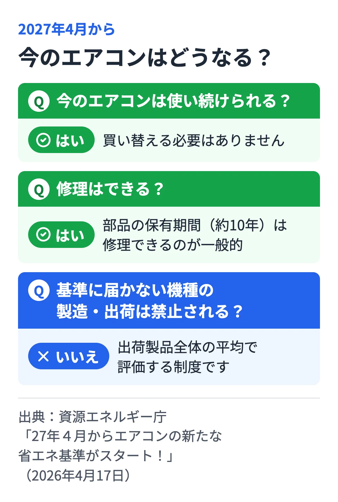
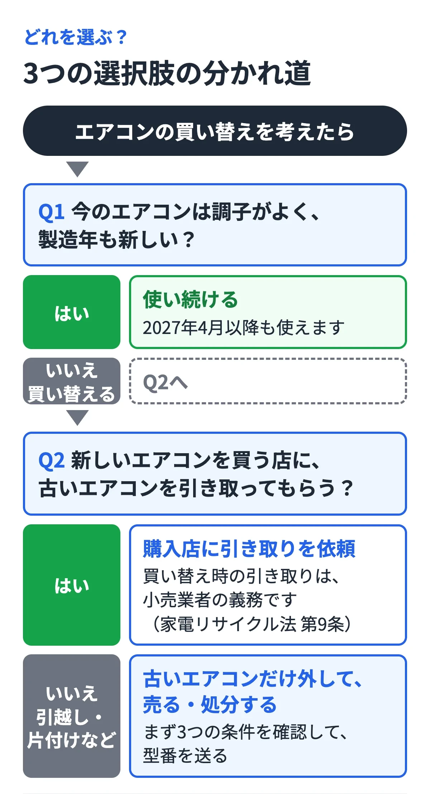
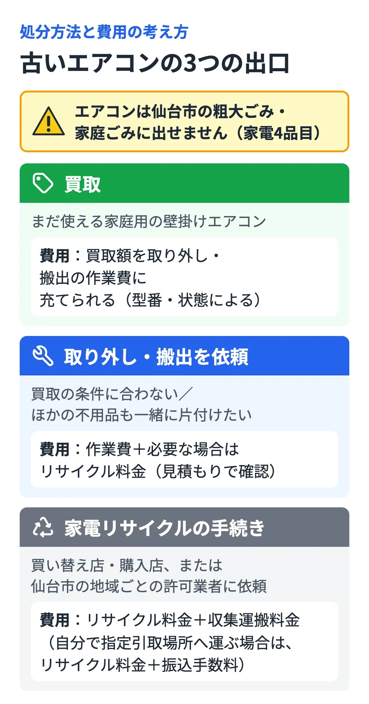
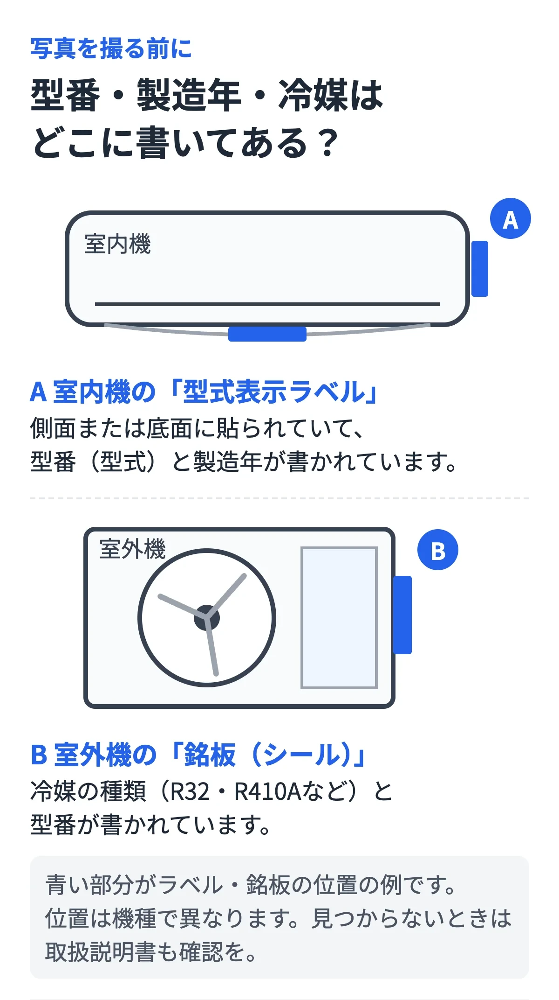
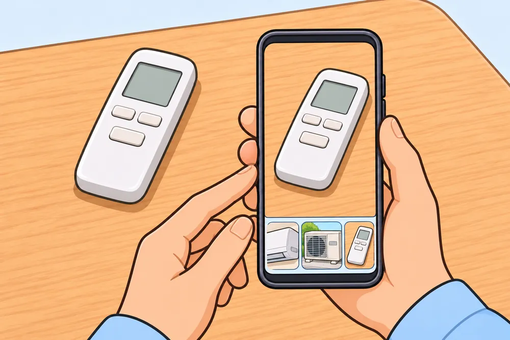
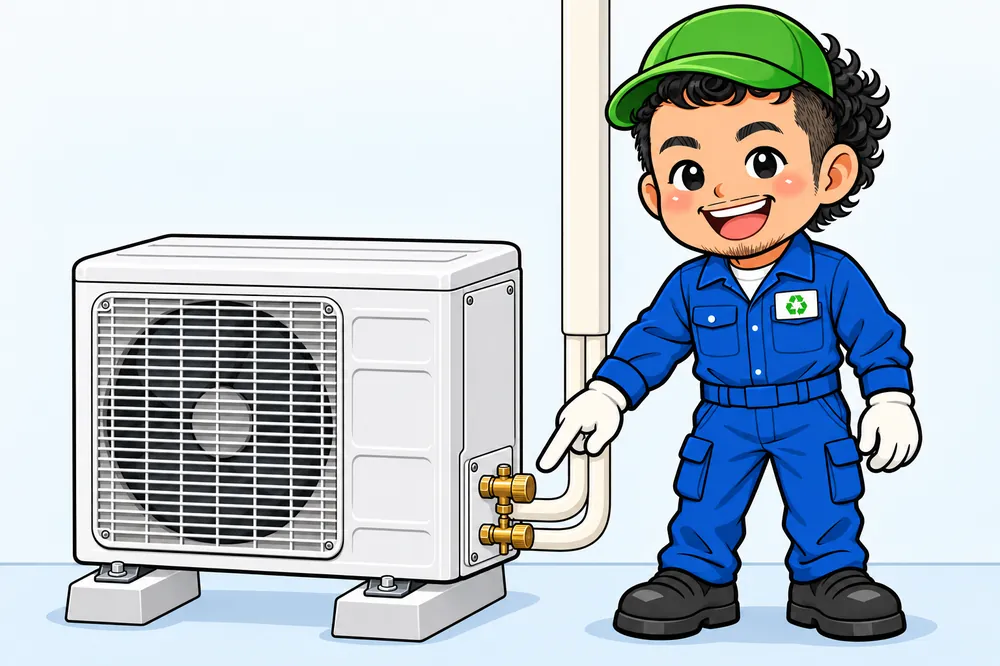
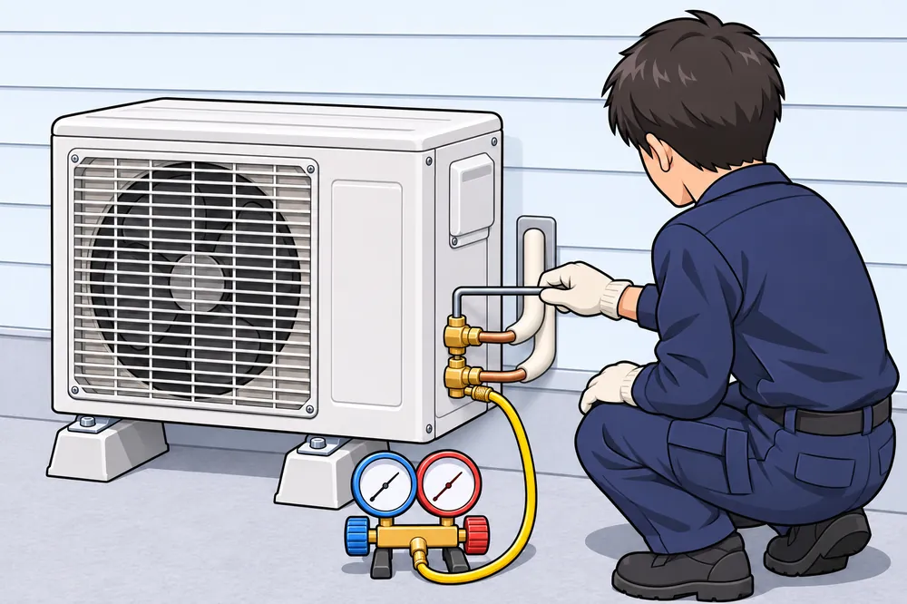

2027年エアコン問題とは？今のエアコンは使える？仙台で買取・取り外し・処分を選ぶポイント

更新日：2026年11月19日／書き手：アビックスリサイクル（有限会社アビックス リサイクル事業部・仙台市青葉区）

ジュンくんが解説：この記事でわかること
- 「2027年エアコン問題」とは、経済産業省の省エネ基準（トップランナー制度）で家庭用の壁掛けエアコンの基準が2027年度から引き上げられ、低価格帯の機種が減ったり価格が上がったりする可能性がある、という話です。
- 今使っているエアコンは、2027年4月以降も使い続けられます。資源エネルギー庁は「買い替える必要はありません」と説明しています。
- 買い替えで外す古いエアコンは、仙台市の粗大ごみには出せません。処分の方法は「買取」「取り外し・搬出の依頼」「家電リサイクルの手続き」の3通りです。
- 買取できるかは、まず「家庭用の壁掛け型」「今も正常に動く」「室内機・室外機・リモコンがそろっている」の3つを確認するだけです。冷媒の種類などの細かい条件は、型番と写真からアビックスリサイクルが確認します。
POINT 01
2027年エアコン問題とは何ですか？
👉 家庭用エアコンの省エネ基準が2027年度から上がることで、「安い機種が減る？」「値段が上がる？」と話題になっていることの呼び名です。
「2027年エアコン問題」とは、家庭用エアコンの省エネ基準が2027年度から引き上げられることをきっかけに、「基準を満たしにくい安い機種が店頭から減るのではないか」「エアコンの値段が上がるのではないか」と話題になっていることを指す呼び名です。
法律や制度の正式な名前ではなく、資源エネルギー庁も「SNSなどではいわゆる『エアコン2027年問題』と呼ばれています」と紹介しています。
省エネ基準の引き上げは、2022年5月に経済産業省が改正したエアコンの告示（省エネ法〔現在の省エネ・非化石転換法〕にもとづく基準）で決まりました。
資源エネルギー庁の資料によると、新しい基準の目標年度は、家庭用の壁掛形が2027年度、壁掛形以外（天井埋込形・床置形など）とマルチタイプが2029年度です。

トップランナー制度とは、どんな仕組みですか？
📘 用語解説
トップランナー制度とは、エアコンなどの製品を作って出荷するメーカーに対して、目標年度までに一定の省エネ性能を達成するよう求める国の制度です。
資源エネルギー庁は、トップランナー制度は「メーカーが年度ごとに出荷する製品全体で基準値を満たすことを求める制度」で、省エネ性能が高い製品と低い製品がある場合は「出荷台数を踏まえた平均値で評価されます」と説明しています。
💡 ここが大事
つまり、基準に届かない機種の製造や出荷を一律に禁止する制度ではありません。
エアコンの値段は上がるのですか？
資源エネルギー庁は、エアコンの販売価格は需要と供給、性能、銅やアルミなどの素材価格、製造・輸送コスト、メーカーや販売店の戦略など、さまざまな要因で決まるとしたうえで、「省エネ性能の向上に伴い、エアコンの販売価格が上がる可能性があります」と説明しています。
💡 ここが大事
値上がりが決まっているわけではなく、「可能性がある」というのが正確な言い方です。
一方で、新しい基準を満たすエアコンは電気代が下がります。
📊 電気代はどれくらい下がる？（資源エネルギー庁の試算）
資源エネルギー庁の試算では、6畳用（2.2kW機）は省エネ性能の指標（APF）が2010年度基準の5.8から2027年度基準の6.6に上がり、年間の光熱費が約2,760円安くなります。
14畳向け（4.0kW機）では年間約12,600円の削減です。試算の前提は電気料金31.75円/kWhで、家庭の環境や使い方によって実際の金額は変わります。
内閣府の消費動向調査によるとエアコンの平均使用年数は約14年で、使い続ける期間全体では、6畳用で約4万円、14畳向けで約18万円の光熱費が安くなると試算されています。

仙台・宮城に関係するポイントはありますか？
新しい基準では、冬の寒さが厳しい地域向けの「寒冷地仕様」の区分が新しく設けられました。
📍 宮城・東北のエアコン普及率（2020年時点）
資源エネルギー庁の資料では、宮城県を含む北海道・東北地域のエアコン普及率は2020年時点で59％と、全国の91％より低く、寒冷地でも省エネ効率のよいエアコンの普及を進めることが理由として挙げられています。
冬の暖房にもエアコンを使う家庭では、買い替えのときに暖房性能や寒冷地向けの仕様も比べる材料になります。
POINT 02
今使っているエアコンはどうなりますか？
👉 2027年4月以降も、今のエアコンはそのまま使えます。修理もできます。
今使っているエアコンは、2027年4月以降もそのまま使えます。資源エネルギー庁は、トップランナー制度はメーカーに適用される制度であり、「ご家庭において現在使用しているエアコンを買い替える必要はありません。引き続き、ご使用になれます」と明記しています。
 ※イメージ
※イメージ

修理についても、資源エネルギー庁は「2027年度基準により、現在お使いのエアコンの修理ができなくなることはありません」としています。
メーカーは製造が終わったあとの部品の保有期間（約10年間）を決めていて、その期間は修理できるのが一般的です。修理できるかどうかは、エアコンの製造年を確かめたうえでメーカーに問い合わせるのが確実です。
使い続けるか買い替えるかを考えるときは、エアコン本体に表示された「製造年」と「設計上の標準使用期間」が目安になります。
経済産業省の長期使用製品安全表示制度により、2009年4月以降に製造・輸入されたエアコンには、製造年と設計上の標準使用期間が本体に表示されています。
📘 用語解説
設計上の標準使用期間とは、標準的な使い方で安全上支障なく使える期間のことで、保証期間とは別のものです。
🔵 ジュンくんポイント
2027年4月を過ぎても、今のエアコンは使えます。慌てて買い替える前に、本体のラベルで製造年を確かめ、調子や電気代を見ながら判断しましょう。
POINT 03
買い替えを考えるとき、どんな選択肢がありますか？
👉 選択肢は「使い続ける」「買い替えて購入店に引き取ってもらう」「古いエアコンだけ外して売る・処分する」の3つです。
エアコンの買い替えを考えるときの選択肢は、大きく分けて次の3つです。

① 今のエアコンを使い続ける
調子がよく、製造年が新しければ、急いで替える理由はありません。2027年度基準で今の機種が使えなくなることはありません。
② 新しいエアコンに買い替え、古いエアコンを購入店に引き取ってもらう
家電リサイクル法では、小売業者は、買い替えのときに同じ種類の古い家電の引き取りを求められた場合や、自分の店で過去に売った家電の引き取りを求められた場合に、引き取る義務があります（同法第9条）。
③ 古いエアコンだけを外して、売る・処分する
引越し、実家の片付け、空き家の整理、部屋の模様替えなど、新しいエアコンの購入と同時でない場合は、買取や取り外し・搬出を別に頼む方法があります。
買い替えと同じタイミングで新しいエアコンを購入する店に古いエアコンを引き取ってもらう方法は、手続きが一度で済む選択肢です。一方で、まだ使える状態のエアコンであれば、処分ではなく買取に出すことで費用の負担を軽くできる場合があります。
POINT 04
古いエアコンの処分方法と費用は、どう考えればいいですか？
👉 エアコンは仙台市の粗大ごみに出せません。処分は「買取」「取り外し・搬出の依頼」「家電リサイクルの手続き」の3通りです。
エアコンは、家電リサイクル法の対象となる「家電4品目」（エアコン、テレビ、冷蔵庫・冷凍庫、洗濯機・衣類乾燥機）のひとつです。仙台市は、家電4品目を市では収集・処分しないと案内しており、エアコンは仙台市の粗大ごみや家庭ごみとしては出せません。

家電リサイクルの手続きで処分する場合
仙台市の案内では、家電リサイクルの手続きで処分する方法は「引き取りを依頼する方法」と「自分で指定引取場所に運ぶ方法」の2つです。
🚚 引き取りを依頼する場合
費用は「リサイクル料金＋収集運搬料金」です。依頼先は、買い替えなら新しい家電を購入した販売店、購入店がわかるなら過去に購入した販売店、販売店に頼めない場合は仙台市の地域ごとの許可業者です。収集運搬料金や支払い方法は依頼先によって異なります。
🏢 自分で指定引取場所に運ぶ場合
費用は「リサイクル料金＋振込手数料」です。郵便局の家電リサイクル券でリサイクル料金を振り込み、エアコンと券を指定引取場所に持ち込みます。仙台市内の指定引取場所は宮城野区に2か所あります（場所と受付時間は仙台市の案内ページで確認できます）。
リサイクル料金は、エアコンのメーカーごとに決まっています。金額は一般財団法人家電製品協会の家電リサイクル券センターのサイトで、メーカー名から調べられます。壁に付いているエアコンを外す場合は、リサイクル料金や運搬料金とは別に、取り外しの作業を誰に頼むかも決めておく必要があります。
買取に出す場合
まだ使える状態のエアコンは、中古品として買い取ってもらえる場合があります。中古品を買い取る事業者は、古物営業法により都道府県公安委員会の許可（古物商許可）を受けていなければなりません（同法第3条）。
✅ 業者選びのコツ
買取を頼むときは、業者のホームページなどで古物商許可の番号が示されているかを確認すると安心です。
3つの方法の比較
買取
- 向いているケース：家庭用の壁掛けで今も正常に動き、室内機・室外機・リモコンがそろっているエアコン（細かい条件は型番で確認）
- 費用の考え方：買取額を取り外し・搬出の作業費に充てられる（費用を抑えられる場合あり。型番・状態による）
- 気をつけたい点：型番の確認が必須。古物商許可のある業者に頼む
取り外し・搬出の依頼
- 向いているケース：買取の条件に当てはまらない、ほかの家具・家電も一緒に片付けたい
- 費用の考え方：取り外し・搬出の費用に加え、リサイクル料金が必要な場合はその分がかかります。金額は見積もりで確認
- 気をつけたい点：見積もりで何の費用が含まれているかを確かめる
家電リサイクルの手続き
- 向いているケース：買い替え先の販売店に引き取ってもらえる、自分で運べる
- 費用の考え方：リサイクル料金＋収集運搬料金（自分で運ぶ場合はリサイクル料金＋振込手数料）
- 気をつけたい点：壁からの取り外しは別に手配が必要な場合がある
⚠️ 理由や条件の説明がないまま「無料」とだけうたう回収をすすめられた場合は、何の費用がどのように差し引かれるのかを、作業の前に必ず確認しましょう。なお、天井埋込形などのエアコンは家電リサイクル法の対象外で、扱いが異なります。
POINT 05
買取できる？まずは3つを確認（細かい条件はアビックスが確認）
👉 お客様に確認していただくのは3つだけ。あとは型番と写真から、アビックスリサイクルが確認します。
アビックスリサイクルでエアコンを買い取るには7つの条件がありますが、お客様に確認していただくのは次の3つだけです。3つとも当てはまれば、型番を送ってください。冷媒の種類などの細かい条件は、型番と写真からアビックスリサイクルが確認します。

お客様に確認していただく3つ
- ✅ 1 家庭用の壁掛けエアコン：天井埋込形・床置形・窓用、業務用のエアコンは買取の対象外です。
- ✅ 2 今も正常に動く：冷房・暖房が問題なく動けば大丈夫です。取り外す前に一度動かしてみてください。
- ✅ 3 室内機・室外機・リモコンがそろっている：どれか1つが欠けていると買取できません。
型番と写真からアビックスリサイクルが確認すること（お客様の確認は不要）
- 冷媒がR32またはR410Aであること（室外機の銘板や型番から確認します）
- 室外機の熱交換器が銅であること（外から見ても判断しにくいため、型番から確認します）
- 大きな傷み・水濡れ・焦げがないこと（写真で確認します）
- 型番が読めること（ラベルの文字が読める写真をお送りください）
最終的に買取できるかどうかは、型番・型式を確認したうえでお伝えします。3つのどれかに当てはまらないエアコンでも、取り外し・搬出のご相談はできます。
🔵 ジュンくんポイント
「うちのは古いから無理かも」と思っても、まずは室内機のラベルで型番を確かめてみてください。買取の条件に当てはまらなくても、取り外し・搬出のご相談はできます。
POINT 06
型番・製造年・冷媒はどこで確認できますか？
👉 型番と製造年は「室内機の側面か底面のラベル」、冷媒の種類は「室外機の銘板（シール）」で確認できます。
 ※イメージ
※イメージ
エアコンの型番（型式）と製造年は、室内機に貼られた「型式表示ラベル」で確認できます。日立のサポートページによると、壁掛形のエアコンは室内機の底面または側面に型式表示ラベルがあり、ラベルに製造年が書かれています。
機種によってはラベルに製造年の記載がない場合があり、そのときは取扱説明書も確認してください。
🔎 メーカーの案内では
冷媒の種類（R32・R410Aなど）は、室外機の銘板（シール）や取扱説明書で確認できます。シャープのカタログには、封入冷媒の種類（R32／R410A）は取扱説明書と機器本体の銘板に記載している、と書かれています。
ダイキンの案内でも室外機に銘板（シール）が貼られている例が示されていますが、銘板の位置は機種によって異なります。


※イメージ
💡 ポイント：写真を送るときに撮っておくとよいもの
- 室内機の型式表示ラベル（型番と製造年が読めるように）
- 室外機の銘板（冷媒の種類と型番が読めるように）
- リモコン
- 室外機の置き場所と、配管が壁を通っている様子
室内機のラベルが高い位置にある場合は、無理をせず、安定した踏み台を使って撮影してください。
POINT 07
取り外し・搬出はどう進みますか？注意点は？
👉 取り外しは自分でせず、専門の業者に任せてください。冷媒を室外機に閉じ込める「ポンプダウン」という作業が必要です。

※イメージ
📘 用語解説：ポンプダウン
壁掛けエアコンの取り外しは、冷媒（フロン類）を大気に逃がさないための「ポンプダウン」という作業から始まります。ポンプダウンとは、配管や室内機に残っている冷媒ガスを室外機に集めて閉じ込める作業です。
独立行政法人製品評価技術基盤機構（NITE）は、家庭用エアコンの冷媒に使われるフロン類はオゾン層の破壊や地球温暖化に悪影響を与えるため、家電リサイクル法で回収が義務づけられており、エアコンを外す際にはポンプダウンで冷媒を室外機に閉じ込める作業が必要だと説明しています。

※イメージ
一般的な取り外し・搬出は、事前に型番・設置場所・運び出す経路を確認し（買取の場合は外す前に動作も確認し）、次の5つのステップで進みます。
- ポンプダウンで、配管と室内機の冷媒を室外機に集めて閉じ込める
- 配管と電線を外す
- 室内機を外す
- 室外機を外す
- 室内機・室外機・リモコンを建物の外へ運び出す

 ※イメージ
※イメージ
自分で取り外してもいいですか？
⚠️ 注意
エアコンの取り外しは、自分で行わず専門の業者に任せてください。NITEは、知識や資格を持たない人が設置・撤去などの工事を行うと、破裂や発火などの事故につながるおそれがあると注意を呼びかけています。
NITEの資料には、使用者が誤った手順で冷媒を集めようとした結果、室外機のコンプレッサーに空気が入り、室外機が破裂して重傷を負った事故（2019年10月）が紹介されています。
搬出で困りやすいのは、どんな場所ですか？
エアコンの搬出で手間がかかりやすいのは、室外機の置き場所と運び出しの経路です。外す前に、次の点を確認しておくと見積もりや当日の作業がスムーズになります。
 ※イメージ
※イメージ
- ✅ 室外機の置き場所：地面、ベランダ、屋根の上、壁面の金具、2台を上下に重ねる架台など、置き場所によって作業の手間が変わります。
- ✅ 配管の通り方：配管カバーの有無や、配管が壁のどこを通っているかを確認します。外したあとの壁の穴をどうするかも、事前に決めておくと安心です。
- ✅ 2階以上・ベランダからの運び出し：エレベーターのない建物では、階段での運び出しの有無で費用が変わる場合があります。アビックスリサイクルの不用品回収の料金表にも、階段作業費の定めがあります。
- ✅ 作業日の天候：仙台の冬は、ベランダや室外機のまわりに雪が残ったり凍ったりすることがあります。屋外での作業になるため、日程は天候も考えて決めましょう。
POINT 08
アビックスリサイクルに頼む場合の流れ
👉 型番を送る → 買取できるかと費用の目安をご案内 → 日程を決めて作業、の3ステップです。
 ※イメージ
※イメージ
STEP1 型番を送る
LINEで室内機のラベルと室外機の銘板の写真を送るか、電話・お問い合わせフォームで型番をお知らせください。
STEP2 買取できるかと費用の目安をご案内
買取対象のエアコンは、買取額を取り外し・搬出の費用に充てられるため、処分の費用を抑えられる場合があります（型番・状態によります）。型番を送るだけで、買取できるかと費用の目安をお伝えします。買取対象外の場合も、取り外し・搬出のご相談を承ります。リサイクル料金が必要な場合は、お見積もり時にご案内します。
STEP3 日程を決めて作業
エアコンの取り外し・搬出とあわせて、家具・家電・衣類など、ほかの不用品もまとめて回収できます。家具・家電1点から、お部屋まるごと・一軒まるごとのお片付けまで対応しています。

✅ アビックスリサイクルでは、事前のお見積もり金額を超えて当日に請求することはありません。作業内容が大きく変わる場合は、必ず事前にご説明します。お見積もり・ご相談は無料です。
アビックスリサイクルについて
アビックスリサイクル（有限会社アビックス リサイクル事業部）は、仙台市青葉区二日町に受付を置き、仙台市・宮城県全域で不用品回収、不用品買取、遺品整理・生前整理、一棟丸ごと片付け、ゴミ屋敷片付けなどを行う事業者です。
古物商許可（宮城県第221010002436号）と産業廃棄物収集運搬許可（宮城県第00400240596号）を取得しており、一般財団法人遺品整理士認定協会から「2026年度 遺品整理 優良事業所」の認定を受けています（有効期限：2027年7月31日）。
黒川郡大和町には回収センター（倉庫）があり、遺品整理士も在籍しています。アビックスリサイクルのホームページでは、仙台市青葉区で冷蔵庫・洗濯機・エアコンの大型家電3点をまとめて回収した事例も紹介しています。
Q&A
よくある質問
Q2027年4月以降、今のエアコンは使えなくなりますか？
A使えなくなることはありません。資源エネルギー庁は、トップランナー制度はメーカーに適用される制度で、家庭で使っているエアコンを買い替える必要はなく、引き続き使えると説明しています。2027年度基準によって、今のエアコンの修理ができなくなることもありません。
QR32やR410Aのエアコンは、2027年から禁止されるのですか？
A禁止されるという話ではありません。2027年度基準は、メーカーが出荷するエアコンの省エネ性能（APF）についての基準で、冷媒の種類を理由に今のエアコンを使えなくする制度ではありません。
R32またはR410Aのエアコンは、アビックスリサイクルの買取条件のひとつに当てはまります。
Q仙台市の粗大ごみでエアコンを出せますか？
A出せません。エアコンは家電リサイクル法の対象となる家電4品目で、仙台市は家電4品目を収集・処分していません。
買い替え先や購入先の販売店、仙台市の地域ごとの許可業者に引き取りを依頼するか、家電リサイクル券を使って指定引取場所に自分で運びます。まだ使えるエアコンは買取に出す方法もあります。
Qエアコンを買取に出すとき、用意するものはありますか？
Aリモコンと、型番がわかるもの（室内機のラベルの写真など）を用意してください。
また、古物営業法では、古物商が品物を買い取るときに相手方の住所・氏名・職業・年齢を確認する措置をとることが定められています（一定の金額未満の取引などの例外があります）。そのため、買取の際に本人確認をお願いする場合があります。
Q買取できないエアコンでも、取り外しだけ頼めますか？
Aご相談いただけます。買取の条件に当てはまらないエアコンでも、取り外し・搬出のご相談を承ります。費用はお見積もりでご案内し、リサイクル料金が必要な場合はその金額もお見積もり時にお伝えします。ほかの不用品と一緒にまとめて片付けることもできます。
📋 ジュンくんのまとめ
- ✅ 2027年エアコン問題は、省エネ基準の引き上げで安い機種が減り、価格が上がる可能性があるという話です
- ✅ 今のエアコンは2027年4月以降も使えます。修理ができなくなることもありません
- ✅ エアコンは仙台市の粗大ごみに出せません。買取・取り外し搬出の依頼・家電リサイクルの3通りから選びます
- ✅ 買取できるかは、まず3つを確認して型番を送るだけ。細かい条件はアビックスリサイクルが確認します
- ✅ 型番を送るだけで、買取できるかと費用の目安をお伝えします。買取対象外でも取り外し・搬出のご相談ができます